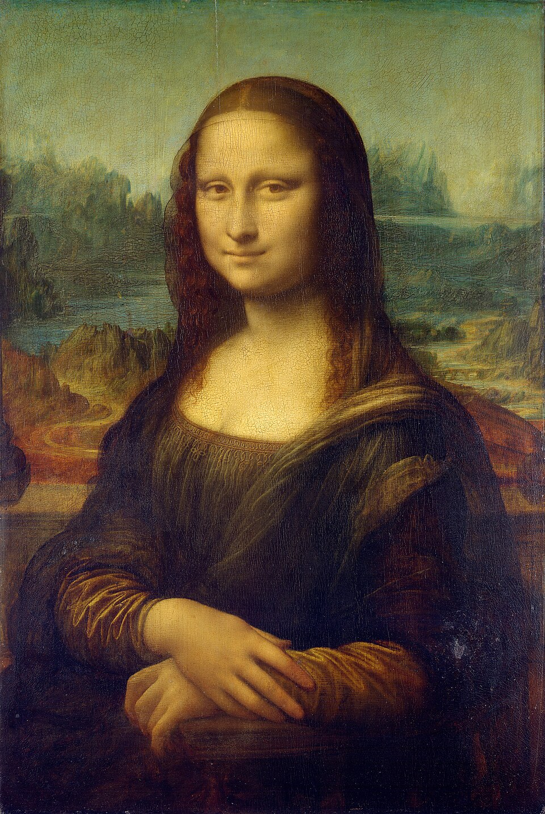
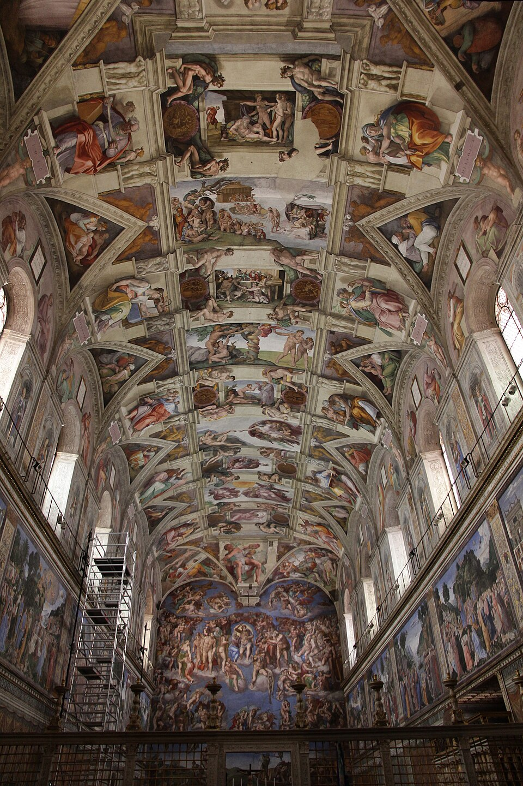
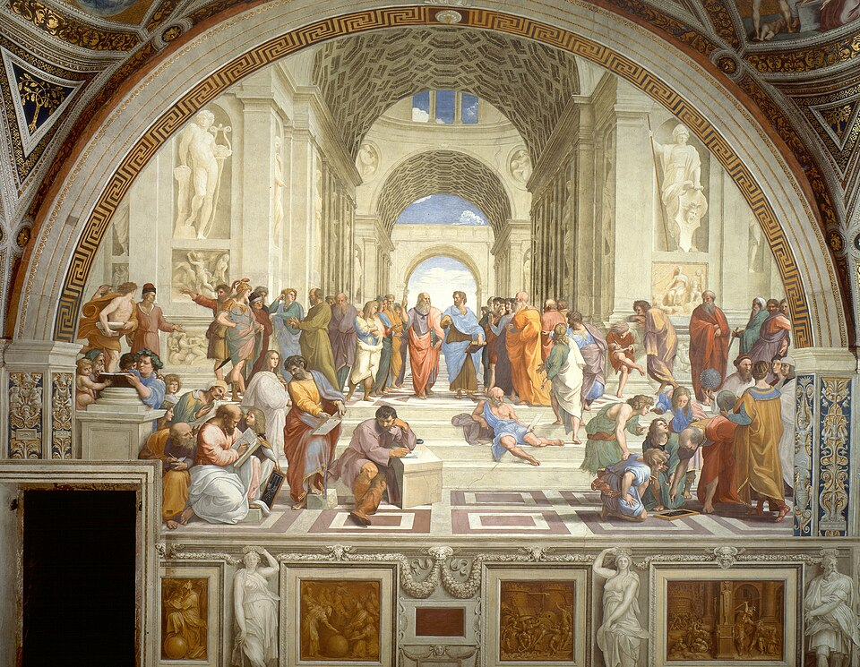
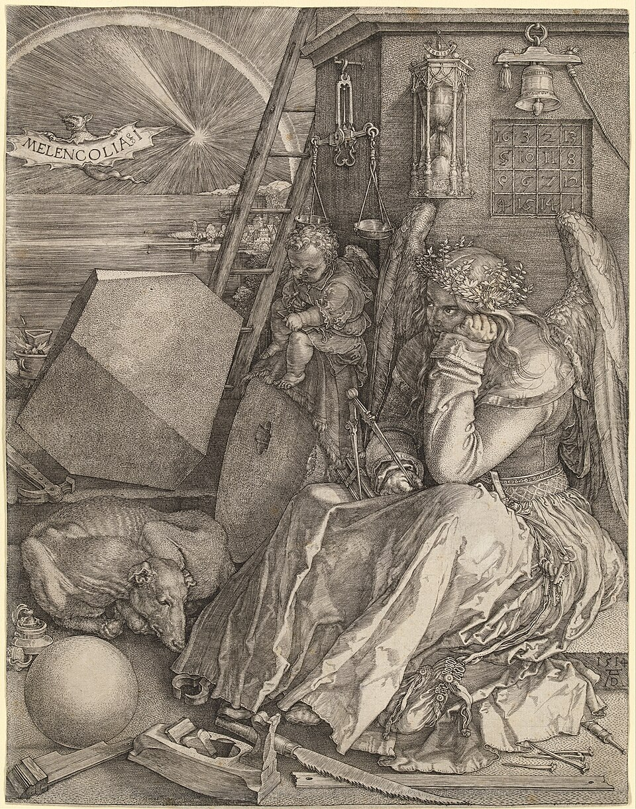
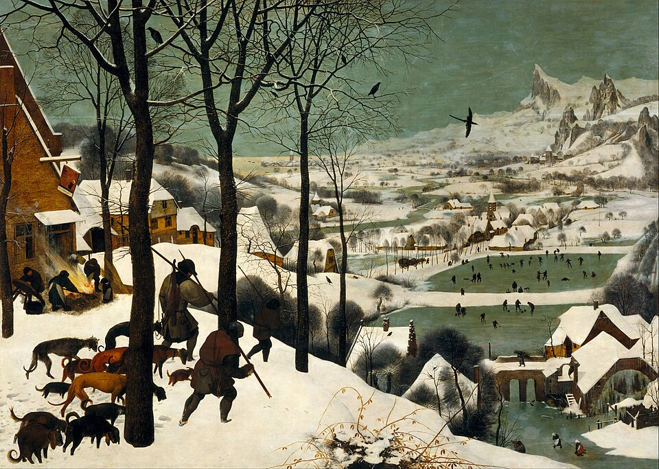

Renaissance
'Renaissance' means rebirth: artists and patrons in Italy, then Northern Europe, revived classical learning and looked closely at the natural world.
Early Renaissance (1400s)
Brunelleschi developed linear perspective, Masaccio used it in painting, and Donatello revived freestanding bronze sculpture. Jan van Eyck in Flanders perfected oil glazes.
High Renaissance (c. 1490–1527)
Leonardo, Michelangelo and Raphael combined realism with balanced, monumental composition.
Northern Renaissance
Dürer, Holbein and Bruegel emphasized detail, portraiture and daily life. Printing made images widely available.
Venice
Titian and others made color and the texture of oil paint the heart of painting.
Patrons and status
Artists moved from craftsmen in guilds to respected creators, helped by patrons such as the Medici and the papacy.
Key works
 c. 1305
c. 1305Scrovegni Chapel frescoes
Giotto · Painting
 1434
1434The Arnolfini Portrait
Jan van Eyck · Painting
 c. 1484–86
c. 1484–86The Birth of Venus
Sandro Botticelli · Painting
 c. 1495–98
c. 1495–98The Last Supper
Leonardo da Vinci · Painting
 1501–04
1501–04David
Michelangelo · Sculpture

c. 1503–19Mona Lisa
Leonardo da Vinci · Painting

1508–12Sistine Chapel Ceiling
Michelangelo · Painting

1509–11The School of Athens
Raphael · Painting

1514Melencolia I
Albrecht Dürer · Print & Drawing

1565The Hunters in the Snow
Pieter Bruegel the Elder · Painting
Movements and styles
Artists
Giotto di Bondone · Jan van Eyck · Sandro Botticelli · Leonardo da Vinci · Michelangelo Buonarroti · Raphael · Albrecht Dürer · Pieter Bruegel the Elder